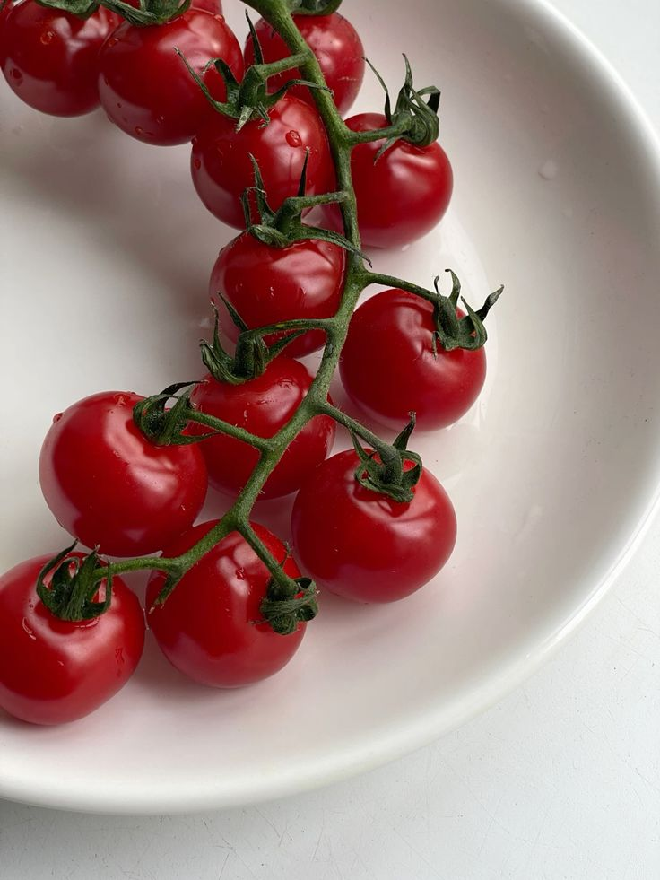

Содержание
Ингредиенты
| Продукт | Количество | КБЖУ | Фото |
|---|---|---|---|
| Паста | 100 г | K:371 Б:13г Ж:1,5г У:75г | |
| Куриное филе | 350 г | K:239 Б:27г Ж:14г У:0г | |
| Сливки 10% | 100 мл | K:196 Б:2,.г Ж:19г У:3,7г | |
| Томаты черри | 8 шт | K:15 Б:0,8г Ж:0,1г У:2,8г |  |
| Шампиньоны | 8 шт | K:22 Б:3,1г Ж:0,3г У:3,3г | |
| Пармезан | 1 ст. ложка | K:431 Б:38г Ж:29г У:4,1г |  |
| Оливковое масло | 1 ст. ложка | K:899 Б:0г Ж:99,9г У:0г |  |
Приготовление
- На разогретую сковроду с оливковым маслом выложите мелко нарезанный чеснок и куриное филе, нарезанное небольшими кусочками.
- Добавьте соль, перец и обжаривайте курицу на среднем огне примено 5 минут.
- Нарежьте грибы и добавьте их к курице, обжаривайте около 5 минут.
- Добавтье разрезанные пополам томаты черри и жарьте еще 2-3 минуты.
- Влейте в сковроду сливки и тушите еще пару минут.
- Добавьте в сковороду сваренные макароны и оставьте томиться на 5 минут.
- Перед подачей блюдо можно украсить тертым пармезаном.
Приятного аппетита!